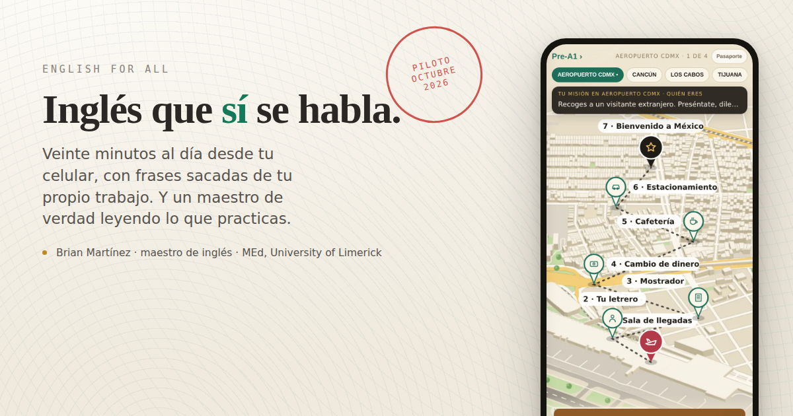

Para quien lleva años estudiándolo y todavía se congela cuando le hablan.

Octubre va por mi cuenta: completo y sin pagar nada. Busco diez personas que la usen de verdad y me digan qué está mal antes de abrirla a todos.
A cambio te pido dos cosas: que entres mínimo tres veces por semana, y que una vez a la semana me contestes por WhatsApp qué te costó y qué se vio raro.
Si te sirve, de noviembre en adelante son $249 al mes y ese precio se te queda mientras sigas. A quien entre después le costará $349. Te lo digo desde ahora para que no haya sorpresas.
Brian Martínez Rodríguez Maestro de inglés y formador de docentes. Maestría en Educación por la University of Limerick / Mary Immaculate College, Irlanda. Seis años dando clase en secundaria, universidad y en el Heroico Colegio Militar. Esta app la hice yo.
Se abre en el navegador, no hay que instalar nada.
Mapas con datos de © OpenStreetMap contributors.